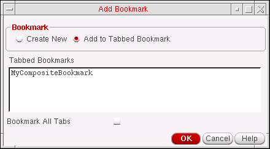
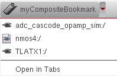
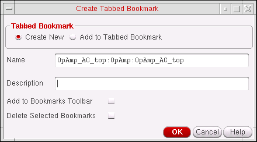
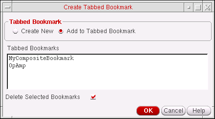
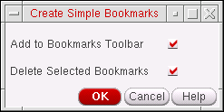

Managing Composite Bookmarks
You can manage existing composite bookmarks with the listed bookmark features.
Adding Bookmarks to Existing Composite Bookmarks
To add another bookmark to an existing collection of bookmarks:
-
In the session window, choose File – Bookmarks – Add Bookmark.
The Add Bookmark form appears.
The name of the current design cellview appears in the Name field. -
Select the Add to Tabbed Bookmark option.
The Add Bookmark form updates to reflect the new setting.All existing tabbed bookmarks are listed in the Tabbed Bookmarks section. - Select the tabbed bookmark that you want to add the current bookmark to.
-
(Optional) If you want to add all the current tabs in your session window to the selected tabbed bookmark, check the Bookmark All Tabs check box.
-
Click OK.
The bookmark gets added to the selected composite bookmark and displayable in the Bookmarks Manager when the composite is expanded.
Creating Composite Bookmarks from Existing Bookmarks
You can create composite (tabbed) bookmarks from one or more existing bookmarks. These bookmarks can be either non-composite bookmarks and/or bookmarks that are already part of existing composites.
To create a composite bookmark from existing bookmarks:
- In the Bookmarks Manager, select the bookmarks that you want to create a composite bookmark for (or to add to an existing composite bookmark).
-
Select Edit – Create Tabbed Bookmark.
The Create Tabbed Bookmark form is displayed with the selected bookmark names displayed in the Name field. - Select to either create a new (Create New) tabbed bookmark, to contain the selected bookmarks, or an existing tabbed (composite) bookmark (Add to Tabbed Bookmark).
- (Optional) In the Name field, type a different name for your bookmark.
-
(Optional) In the Description field, type a description for your bookmark.
This text appears in the Description column of the Bookmarks Manager window. -
(Optional) If you want your composite bookmark to also appear on the Bookmarks toolbar, check the Add to Bookmarks Toolbar check box.
There is no limit to the number of bookmarks you can add to the Bookmarks toolbar. However, when the Bookmarks toolbar area is full, a “>>” pull-down appears on the right side of the toolbar so that you can select additional bookmarks that do not appear because of space restrictions. -
Selecting the Add to Tabbed Bookmark option updates the Create Tabbed Bookmark form to display a section that contains all the existing Tabbed Bookmarks.
In this section, choose the existing tabbed bookmark that you want to add the additional, selected, bookmarks to. - (Optional) If you also want to remove the bookmarks from their original bookmark location (whether that was originally a single bookmark or a bookmark that was part of a composite), check the Delete Selected Bookmarks option.
-
Click OK
A new (tabbed) composite bookmark gets created, or the selected bookmarks gets added to an existing tabbed bookmark.
Detaching Bookmarks from Existing Composite Bookmarks
To create simple single bookmarks by either removing them or copying them from existing tabbed composite bookmarks:
-
In the Bookmarks Manager, select the bookmarks that you want to detach from an existing composite bookmark.
By detaching a bookmark from a composite bookmark you are not automatically deleting the bookmark from its composite host. -
Select Edit – Detach Selected Bookmarks (or select Detach Selected Bookmarks from the Bookmarks Manager toolbar).
The Create Simple Bookmarks form is displayed. - (Optionally) Check the Add to Bookmarks Toolbar option so that the bookmarks to be detached are available from the Bookmarks toolbar.
- (Optionally) Check the Delete Selected Bookmarks option if you want to delete the selected bookmarks from their current composite bookmark host.
-
Click the OK button to create the simple bookmarks.
If chosen, the bookmarks also appear in the Bookmark toolbar and/or be deleted from the composite it was initially found in.
Related Topics
Return to top